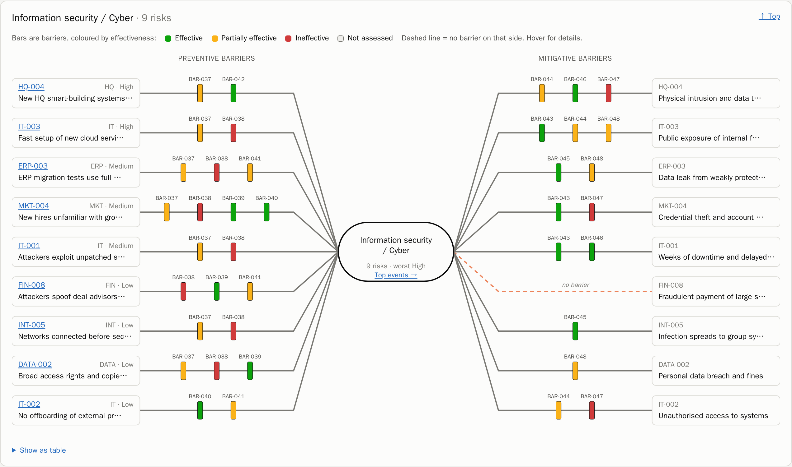
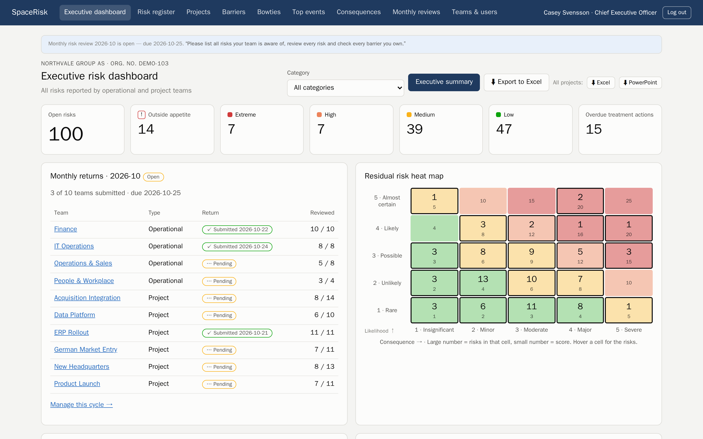
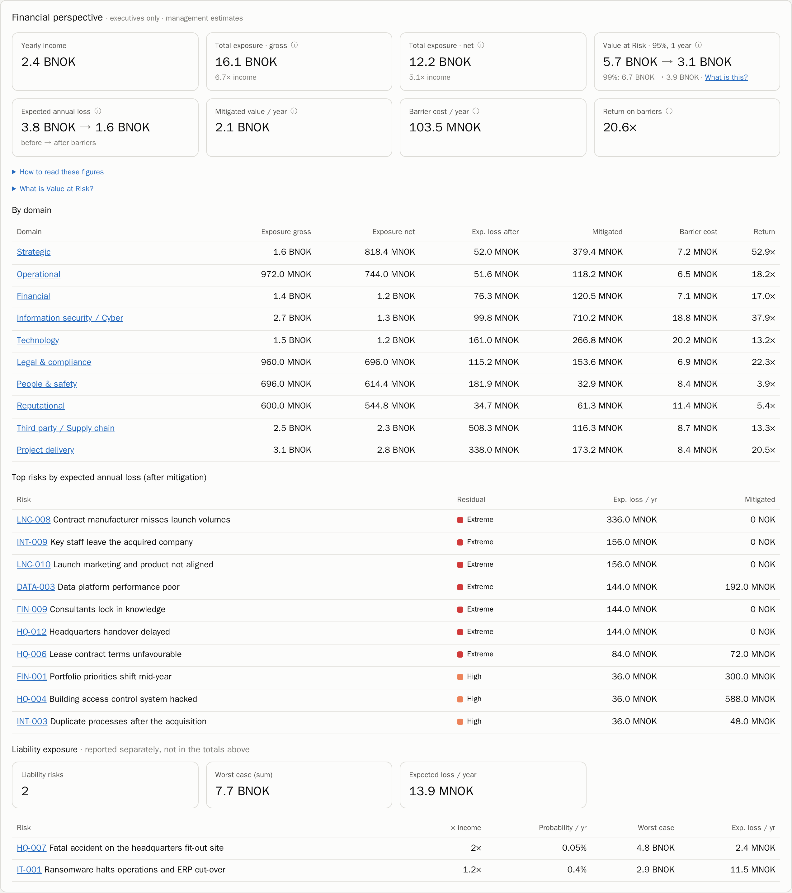
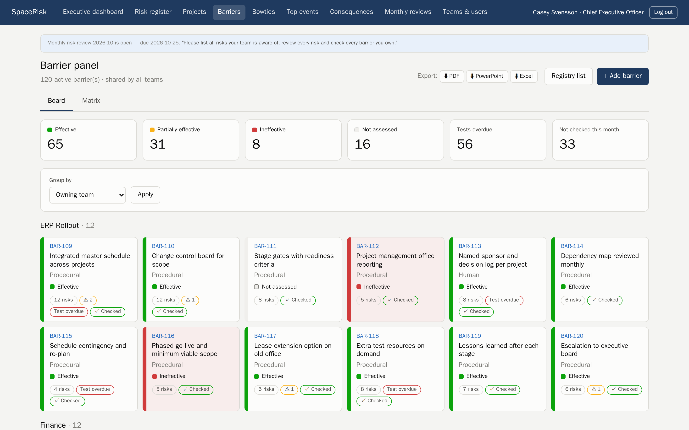
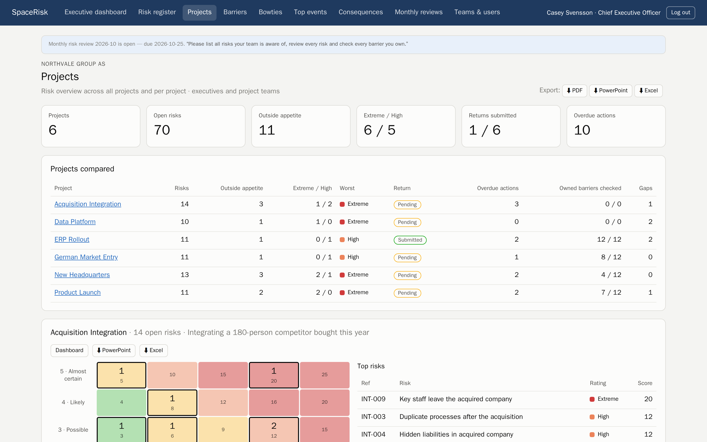
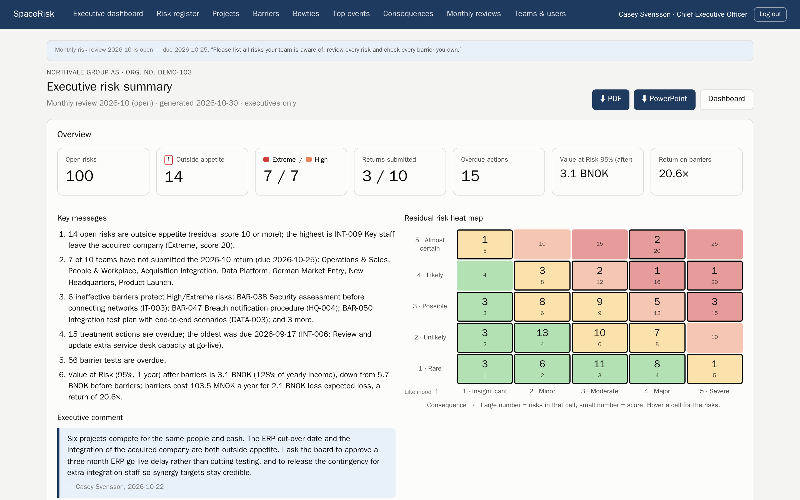

Gestión de riesgos que la gente usa de verdad
Todos los riesgos a la vista, del equipo al consejo de administración.
SpaceRisk convierte los riesgos de sus equipos en bowties vivos: qué puede salir mal, qué barreras lo evitan y cuánto costaría. Cada mes, los riesgos suben desde quienes mejor los conocen hasta el CEO, y a través de todos los proyectos.
¿Qué es un bowtie?
Un bowtie (diagrama de pajarita) muestra un riesgo en una sola página. A la izquierda, las amenazas que podrían provocarlo. En el centro, el evento que nunca querría vivir. A la derecha, lo que ocurre si sucede. Entre ellos, sus barreras: los controles que mantienen el nudo bien atado.
Barreras en su sitio: las amenazas se detienen antes del evento principal y el daño queda contenido.
- Las barras verdes, ámbar y rojas indican lo bien que funciona hoy cada barrera.
- Una misma barrera puede proteger frente a muchos riesgos, y su estado se refleja en todos los lugares donde se usa.
- Los bowties por dominio reúnen todos los riesgos de una categoría en una sola imagen: ciberseguridad, seguridad física, finanzas y más.
Cómo fluye el riesgo en su organización
Los riesgos pertenecen a quienes mejor los conocen. SpaceRisk garantiza que se revisen cada mes y lleguen a quienes toman las decisiones.
🛡️ Los responsables de cada barrera confirman cada mes que sus controles siguen funcionando, o los señalan antes de que fallen.
Todo lo que necesita un responsable de riesgos. Nada que le sobre.
Registro de riesgos ISO 31000
Probabilidad × consecuencia, valoraciones inherente, residual y objetivo, apetito de riesgo y planes de tratamiento.
Ciclo de revisión mensual
Cada equipo revisa todos sus riesgos y comprueba todas las barreras de las que es responsable; después, el responsable envía el informe.
Bowties y panel de barreras
Bowties por riesgo y por dominio, un tablero de barreras y una matriz riesgo × barrera que deja al descubierto las brechas.
Eventos principales y consecuencias
Vea de qué se está protegiendo realmente, agrupado por dominio y para todos los equipos.
Perspectiva financiera
Valor en Riesgo (VaR), pérdida anual esperada antes y después de las barreras, y el retorno de cada corona invertida en controles.
Resumen ejecutivo
Mensajes clave redactados a partir de los datos, más su propio comentario, listos para el consejo.
Exportación con un clic
PDF, PowerPoint y Excel para cada página, cada equipo y cada proyecto.
92 casos de ejemplo por sector
Empiece con una empresa de demostración realista de su propio sector, desde un hospital hasta una plataforma petrolífera.
Eche un vistazo por dentro






Pensado para su sector
Elija una de las 92 empresas de ejemplo y explore SpaceRisk con riesgos y barreras de su propio entorno. Todas las empresas son ficticias.
Genérico
Sanidad
Sector público
Servicios profesionales
Tecnología
Telecomunicaciones
Finanzas
Mercados de capitales e inversión
Energía y recursos
Industria y productos del mar
Alimentación y agricultura
Transporte
Salud, ciencia y educación
Comercio minorista
Hostelería y ocio
Eventos y recintos
Consumo
Construcción
Contáctenos
Nosotros alojamos SpaceRisk por usted, o usted lo ejecuta en sus propios servidores: usted elige. En ambos casos, sus datos son suyos: expórtelos cuando quiera en PDF, PowerPoint, Excel o como copia de seguridad completa de la base de datos.
thomas.frivold@frivolddigital.com
Alojado por nosotros o autoalojado · exportación en muchos formatos · sus datos son suyos · sin rastreo · Precios
⬇ Ficha de producto (PDF) · ⬇ Presentación comercial (PPTX) · Textos